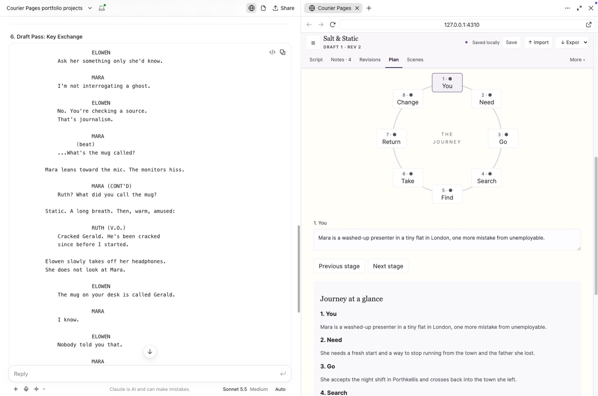
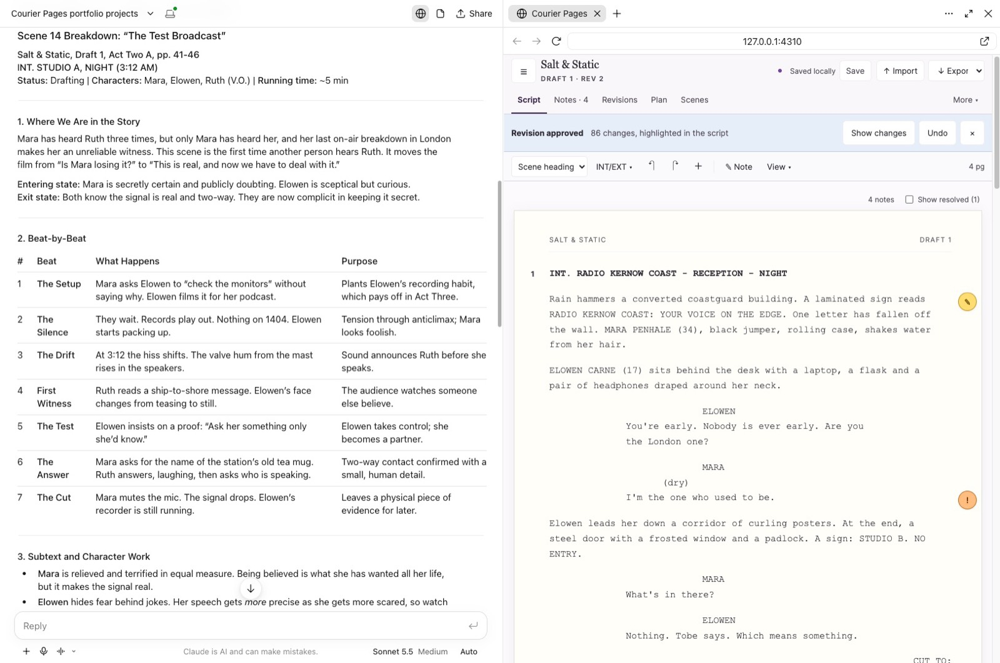
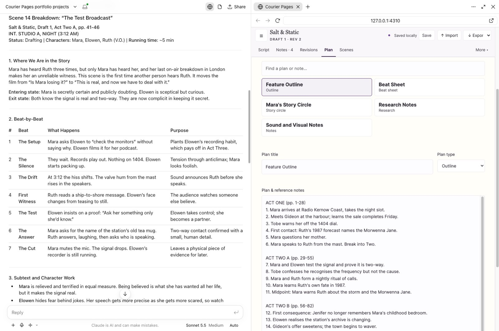
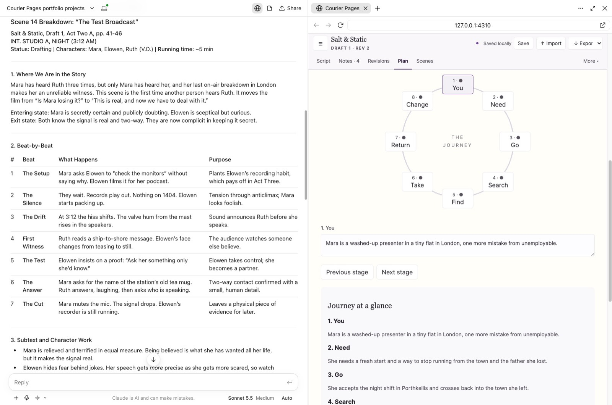
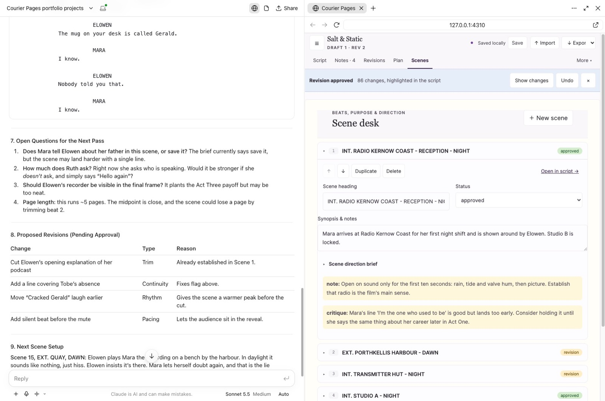
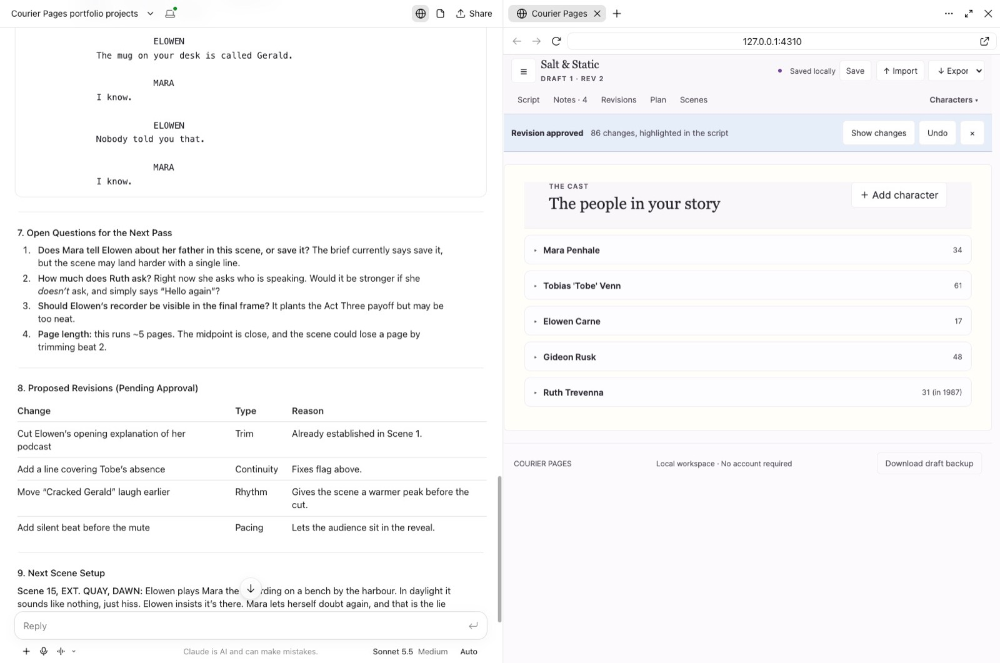

1 · The problem
I wanted AI collaboration inside my screenplay workflow.
I've planned screenplays for years and started writing a few in Fade In, but never finished one. I got stuck trying to make everything perfect instead of getting it on the page. I couldn't find a tool where an AI could work on the script over MCP without me copying material back and forth between tools, so I built one.
Writers who ask an AI chat for help get text back in a conversation, paste it into the script by hand and lose track of what changed. Giving the assistant direct access to the file is worse: it can overwrite work the writer wanted to keep. So control became a design rule: how can a writer get useful AI help while remaining the author of every change?
So far I'm the only user, and it's my newest project. What I describe here is what I saw using it on my own screenplay.
2 · My contribution
What I decided, built and checked.
I set the product direction and the "propose, then approve" rule, designed the interface and review flow, and tested and accepted the behaviour. Implementation was shared with AI coding tools.
I planned it with Claude and Codex, built it mainly with Codex, and had Claude review and refine the result. I reviewed what they produced and tested it, through the automated tests below and by using it myself.
3 · The working product
One journey: suggest, review, apply.
A real session
Claude on the left, Courier Pages on the right, working on a test screenplay called Salt & Static.
 1234
1234- 1Say what's proposedA banner shows the AI's summary and how many changes it made.
- 2Show the differenceRemoved words in red, new words in green, inside the original line.
- 3Decide per changeEvery element has its own Accept, Skip and Revise.
- 4Apply deliberatelyAccept all, or apply only what you chose. Unchosen changes are discarded.


Redesigning the review experience
The hardest part was the review screen. The first version showed only what had changed, like a code diff, with no context. It was confusing, and I couldn't tell what to keep: some of what the AI wrote was good, some was bad and some needed more work. I rebuilt it for a writer. Changes now appear inside the original text, so you read the whole flow and decide line by line. I checked it by using the new version on my own screenplay.
Try it yourself
A simplified recreation of the review screen, using a sample scene.
More of the workspace: planning and context
The assistant reads from the same planning material the writer uses, so it can draw on the story's existing context.




4 · Key product decisions
Four choices that shaped it.
Suggestions are proposals, never edits
ProblemAn assistant that writes straight into the script can destroy work.
ApproachAI tools can only create pending proposals. No tool can approve or commit one, so approval can only happen in the editor.
Trade-offEvery change costs the writer a review step, so the review has to be fast to scan.
Show exactly what will change
ProblemA block of replacement text hides what is different.
ApproachWord-level red and green differences inside each line, with Accept and Skip per element.
Trade-offMore interface to build and learn than a single Apply button.
Protect writing done after the AI looked
ProblemThe writer may keep typing while a suggestion is pending.
ApproachIf the writer edits an element after the chat read the script, that element is flagged and left out of Accept all. If a whole proposal was written against an older version, the server rejects it as stale.
Trade-offSome suggestions need a manual decision or a fresh request.
Local-first and private by default
ProblemScreenplays are private, and writing shouldn't depend on an account or subscription.
ApproachA loopback server stores work on the writer's own computer. History, checkpoints and restore are built in. A connected AI app can read what it's asked to read, so what it sees also depends on that app's own settings.
Trade-offNo sync between devices yet.
5 · How I built and checked it
A small local system, tested at the edges.
A browser editor talks to a Node server on the writer's own machine, which keeps projects in SQLite. The same server exposes tools over the Model Context Protocol so AI apps can read a project and submit proposals.
Technical detail
- TipTap provides the structured screenplay editor. Elements keep stable IDs so the review screen can match a proposal to the script.
- Data lives in
~/Documents/Courier PagesunlessSTUDIO_DATAsays otherwise. - The server refuses to start a second backend or create a replacement database for a misconfigured data folder, so nothing is silently overwritten.
- Version history supports compare, download, checkpoint and restore.
Checking it
In October 2026, 48 tests across 15 files passed, covering the API, MCP tools, revisions, review notes, migrations and authentication. Beyond the tests, I've used it on my own screenplay, which is how I found the problems above. Separate browser tests cover the editor, workspace and review notes, and npm run verify:mcp checks the MCP server starts and lists projects.
Keeping versions safe
Every script has a version number. A proposal records the version it was written against, and the server refuses to save over a newer one. If the writer keeps typing while a suggestion is pending, the stale proposal is rejected rather than quietly overwriting their work, and a request to review the latest version replaces it. Each approval is saved as its own revision, which is what makes Undo and History possible.
How AI helped
I asked Claude and Codex each to make a plan with me for getting the idea going, then had them review each other's plans to check the idea would work for both. Codex did most of the building and Claude reviewed and refined it. I then had each write and test its own connection to the app, and ran the same screenplay through both so I could use the strengths of each.
The first AI-built version needed correcting. It had a lot of functionality I didn't need and unnecessary complications, and it had to work with the AI chat and the browser side by side, each taking half the screen. I cut it back.
6 · Learning and next steps
What I learned and what comes next.
- What I learned: reviewing prose needs enough surrounding context to judge its flow. A list of changes isn't enough. Building a product that improves how I work with AI also showed me how accessible more complex apps are now.
- Limits today: it's a working local tool. It needs Node.js installed, starting it is technical, and it runs on one computer with no sync between devices.
- Feedback: only mine so far. Other writers testing it would help me improve the interface and find features I've missed.
- Next: make it easy to start so it feels like an app. Later, a way for people to collaborate on a script, and a wider audience.